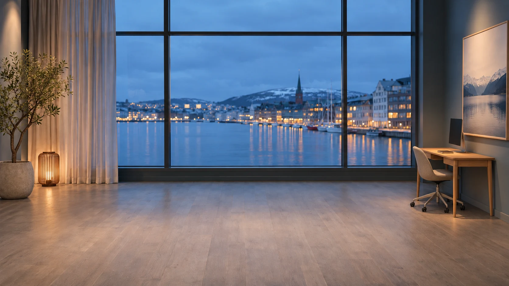
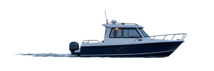
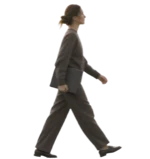

Sajtmaskin
Öppna regissörsvyn
Alinas studio




Alina
Öppna studion via webbservern för att prova röst och läppsynk.
Öppna Alinas lokala studioOm servern är avstängd, kör npm run alina:studio i projektmappen.


